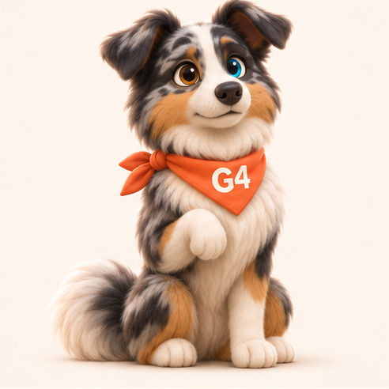

i co dalej?
Zacznij od 5 minut dziennie.
Darmowe lekcje strategii w Akademii Guliwera.
guliwera4.pl/aplikacja

Angelika Pruchniak-Gąszczyk
5 / 5
 Angelika Pruchniak-Gąszczyk5 / 5
Angelika Pruchniak-Gąszczyk5 / 5